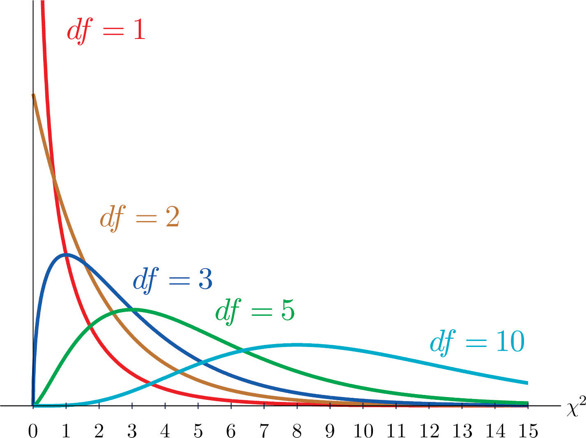

More than Binary
So far we have been dealing with binary categorical variables. “Yes/No” and “Success/Failure” types of responses, both as a single variable analysis and as the relationship between two of these types of variables. But the world isn’t always as simple as “Yes/No”. We need a way to work with categorical variables that have 3 or more levels to them.
We can do this with, but we will have to put our old friend the Normal distribution aside for a while and work with our new friend the Chi-square \((\chi^2)\) distribution. More details on the distribution later. We will focus on two specific types of tests for the one and two variables:
| Variables | Test |
|---|---|
| One categorical variable (3+ levels) | \(\chi^2\) Goodness of Fit Test |
| Two categorical variables (any # of levels) | \(\chi^2\) Test of Independence |
Pause
How do I pronounce the Greek letter Chi \((\chi)\)?
Don’t use the ch sound, we’re not talking about tea here. Use a hard k, like you would pronounce the Ky in Kylo Ren.

\(\chi^2\) Test of Independence
I’ll start with this case since it’s usually more interesting to consider multiple variables.
When to use
This test is different from checking to see if two populations have the same proportion. (Although it is possible to run both tests on the same data/research question.) When we just want to know whether two categorical variables are independent from one another, we can run a \(\chi^2\) Test of Independence.
But this method is useful when we have more than 2 groups in at least one variable. In other words, it wouldn’t make sense to compare just two proportions, but three, four, or more proportions depending on how many groups the categorical variables have.
This is another theoretical approach to answer the question of independence. We’ve already seen the simulation approach. And when we have a \(2\times2\) table we can use the difference in two proportions to test independence.
Assumptions
To perform the \(\chi^2\) test, we need to meet some conditions:
Data should be in a two-way table form (2 categorical variables with finite number of categories)
At least 5 expected counts in each cell
Each case/subject must be independent from one another (different than testing if the variables are independent)
An Example
Middle school priorities
In a study of students in grades 4-6, subjects were asked whether good grades, athletic ability or popularity was most important to them. A two-way table separating the students by class and by choice of most important factor is shown below.
Research Question: Do these data provide evidence to suggest that goals vary by class?
| Grades | Popular | Sports | |
|---|---|---|---|
| 4th | 63 | 31 | 25 |
| 5th | 88 | 55 | 33 |
| 6th | 96 | 55 | 32 |
In R
Now we want to get the data into R and visualize the breakdown of responses. Let’s perform some initial EDA.
First we put the data from the table into R (this code will be useful for future homework).## rbind() combines vaues by rows
popular <- as.table(rbind(c(63, 31, 25),
c(88, 55, 33),
c(96, 55, 32)))
## dimnames() lets me label the category levels rows first, then columns
dimnames(popular) <- list(Class = c("4th", "5th", "6th"),
Area = c("Grades", "Popular", "Sports"))
popularTo visualize, we can still use a mosaic plot. Note that the order of the variables in the code changes the row and column variables. We always want the response as the columns and explanatory as the rows.
mosaicplot(~ Area + Class, data = popular, color = c("lightblue", "blue", "darkblue"))\(\chi^2\) Test Statistic
Steps of a hypothesis test
Set up hypotheses
- Check any conditions for the test you want to use
Collect data
Find the appropriate test statistic to summarize and evaluate the sample data
Determine if the observed sample is unusual, assuming the null hypothesis is true
- We always use the test statistic for the sample as our way to measure “unusual”.
For a test of independence
\(H_0:\) Area of importance is independent of the student class.
\(H_a:\) Area of importance and student class are dependent. There is a relationship.
We need to first assume that Class is independent of what Area students find important. So consider the table without the grade rows (just the column totals).
| Grades | Popular | Sports | Total |
|---|---|---|---|
| 247 | 141 | 90 | 478 |
| 52% | 29% | 19% | 100% |
It’s important that we know the proportion of responses. I can then make the assumption that 52% of all students think grades are the most important in my null fantasy world.
Remember that we are not trying to test whether the groups under
Areaare similar. Ex: We don’t care if more students think popularity is more important than sports (that will be the next test). We want to know if the breakdown is different between the grades.
Expected Counts
We assume that Class doesn’t matter, and we assume for now that 52% of students think grades are most important.
How many 4th graders out of 119 should think grades are more important if the null hypothesis is true?
\(119\times0.52=61.49\)
Alternatively:
\(119\times\frac{247}{478}=61.49\)
That means, to find all of the Expected Counts under the null hypothesis, for each cell we take:
\[\text{Exp}=\frac{\text{row total}\times \text{col total}}{\text{overall total}}\]
Find the remaining expected counts to fill in the rest of the table.
| Grades | Popular | Sports | Total | |
|---|---|---|---|---|
| 4th | 119 | |||
| 5th | 176 | |||
| 6th | 183 | |||
| Total | 247 | 141 | 90 | 478 |
Don’t forget to check the conditions and make sure we have at least 5 expected students in each cell!
Compare with the Observed Counts
Once we have the expected counts under the null hypothesis, we need to consider how unusual the counts we actually observed are. Again, we are checking the strength of our sample evidence against the null hypothesis.
For each cell, we find the difference between observed and expected, square it (to ensure positive values and amplify any differences), and divide by expected counts (as a way to standardize). This is called a Pearson residual:
\[\frac{(\text{obs}-\text{exp})^2}{\text{exp}}\]
The test statistic is then the sum of each of these values. A way for us to use one number to represent the overall difference from expectations:
\[\text{test stat: }\chi^2_{df}=sum \left [ \frac{(O-E)^2}{E} \right ]\]
In R
We use the chisq.test function to calculate the expected counts and test statistic for us. It only needs two arguments, the data in table form, and a correct = FALSE statement (for our class we will mostly use data that are large enough).
chisq.test(x, correct)
| Argument | Purpose | Default |
|---|---|---|
x |
the data, must be in table form as counts | No default, must create table from data first |
correct |
an option for when there are fewer than 5 in one or more cells | correct = TRUE |
Xsq <- chisq.test(popular, correct = FALSE)
XsqYou should save the results of the test as Xsq because you can look at the expected counts and Pearson residuals that were calculated
$ suffix |
values | use |
|---|---|---|
$observed |
observed counts in sample | Xsq$observed |
$expected |
expected counts | Xsq$expected |
$residuals |
Pearson residuals for each cell | Xsq$residuals |
Look at the expected counts and residuals to make sure they match what you calculated by hand above.
Xsq$________Chi-square
It turns out, when there is no association between two variables the test statistic should be very close to zero. Since the difference between each observed and expected count would be close to zero, adding up all of the small deviations from what was expected would be close to zero.
The possible null test statistic values follow a \(\chi^2\) distribution. This is a skewed right distribution with one parameter that changes the center, spread, and shape, called degrees of freedom. More degrees of freedom, means less skew in the possible values.

Choosing Degrees of Freedom
For a test of independence, we can figure out the appropriate degrees of freedom to use by using the number of rows and columns in the original table.
\[df = (\text{# rows}-1)\times(\text{# columns}-1)\]
Unusual Sample?
Let’s look back at the results of our chisq.test.
##
## Pearson's Chi-squared test
##
## data: popular
## X-squared = 1.3121, df = 4, p-value = 0.8593So the test statistic for this data is X-squared = 1.3121.
So far we know:
The test statistic for our sample is 1.31
Test statistics under the null hypothesis follow a \(\chi^2\) with \(df=4\).
P-value for \(\chi^2\) tests
When using the \(\chi^2\) distribution, our “extreme” values for the test statistic, will be the ones that are in the upper tail only. Essentially, the larger the test statistic, the more the sample differs from what is expected. So p-values will always be calculated as a one-tail proportion, specifically the upper tail.
Find the p-value using R. What is the probability of getting a test statistic of 1.31 or greater on this null \(\chi^2\) distribution?
# remember to load mosaic package first
# and remember the p-value is the area in the upper-tail
xpchisq(1.31, df = 4, lower.tail = FALSE)I may ask you to find p-values with the function above, but in general we can get them from the chisq.test function. Compare the result from each.
chisq.test(popular, correct = FALSE)Conclusion
The test statistic is fairly close to zero (1.31) and the p-value is pretty large (0.8593), so we will fail to reject the null hypothesis.
Student class and area of interest do not seem to be associated, based on our sample. The proportions of what is important to students stays consistent through these three grades. In the table below we can see that they are pretty similar for each class across the areas, but our \(\chi^2\) test of independence showed that there is no statistical evidence of a relationship.
| Grades | Popular | Sports | |
|---|---|---|---|
| 4th | 0.53 | 0.26 | 0.21 |
| 5th | 0.50 | 0.31 | 0.19 |
| 6th | 0.52 | 0.30 | 0.17 |
\(\chi^2\) Goodness of Fit Test
When to use
For one categorical variable that has more than two levels.
Sometimes we are just looking at how counts are spread out in a single categorical variable. Like rolling a die 10,000 times, do we see an even distribution of each side landing up?
| 1 | 2 | 3 | 4 | 5 | 6 | Total |
|---|---|---|---|---|---|---|
| 1667 | 1667 | 1666 | 1667 | 1666 | 1667 | 10000 |
Or might there be something fishy about how many times certain numbers appears…
| 1 | 2 | 3 | 4 | 5 | 6 | Total |
|---|---|---|---|---|---|---|
| 1000 | 1000 | 1000 | 2000 | 1000 | 4000 | 10000 |
We need a way to test whether the counts we observe in a sample conform to what we might expect based on a population. How good is the fit of the proposed distribution of counts?
The \(\chi^2\) Goodness of Fit Test does exactly this. It allows us to check whether counts follow a defined set of proportions for each group.
Assumptions
At least 5 expected counts in each cell
Each case/subject must be independent from one another (different than testing if the variables are independent)
We need at least 3 group levels of the categorical variable
An Example
Iran Election
There was lots of talk of election fraud in the 2009 Iran election. We’ll compare the data from a poll conducted before the election (observed data) to the reported votes in the election to see if the two follow the same distribution.
| Candidate | Number of votes in poll | Reported % of votes |
|---|---|---|
| Ahmedinajad | 338 | 63.29% |
| Mousavi | 136 | 34.10% |
| Minor Candidates | 30 | 2.31% |
| Total | 504 | 100% |
The question we are asking is:
Do the observed voting numbers match the reported percentages or do they differ more than what we would expect from random chance?
The Hypotheses
\(H_0:\) The observed counts from the poll follow the same distribution as the reported votes.
\(H_a:\) The observed counts from the poll do not follow the same distribution as the reported votes.
Expected Counts
Using the same approach as the test for independence earlier. How many of the 504 voters would you expect to vote for each candidate if the null hypothesis is true?
| Candidate | Number of votes in poll | Reported % of votes | Expected # of votes in poll |
|---|---|---|---|
| Ahmedinajad | 338 | 63.29% | |
| Mousavi | 136 | 34.10% | |
| Minor Candidates | 30 | 2.31% | |
| Total | 504 | 100% | 504 |
## How many of the 504 votes do we expect for
## each candidate using the reported %'s?Check the conditions for performing our test
Make sure we have at least 5 expected voters for each candidate!
Test statistic
Again, just like the test for independence, we want to see how close our observed poll was to the counts we expected. The test statistic is the same as before:
\[\chi^2_{df}=sum \left [ \frac{(O-E)^2}{E} \right ]\]
And in R, we can find this by creating the observed table then using chisq.test.
votes <- as.table(c(338, 136, 30))
## With only one variable, we use names instead of dimnames
names(votes) <- list(candidate = "Ahmedinajad", "Mousavi", "Other")
votesNote that in these examples, we are putting the data into table form manually. When we have the raw data (like the sleep study, or dolphin experiment) the data can be turned into a table with the table() function. See previous examples for code.
To use chisq.test as a goodness of fit test, we will have to include the population distribution we intend to check with the p = argument. In this case that would be the reported results (63.29%, 34.10%, 2.61%).
Xsq_2 <- chisq.test(votes, p = c(0.6329, 0.3410, 0.0261), correct = FALSE)
Xsq_2Do your expected counts and Pearson residuals match when calculating by hand? (check Xsq_2$expected and Xsq_2$residuals)
Unusual?
Is the test statistic (30.19) we observed in our sample unusual under the reported distribution of votes?
For one variable, we would expect the test statistic values to follow a \(\chi^2\) distribution with \(df=\text{# group levels}-1\). In our example, \(df=3-1=2\).
Find the p-value using the \(\chi^2\) distribution, \(df = 2\), and test statistic of 30.19 in R.
xpchisq(_____, ______, ____________)Does it match the output from chisq.test?
Conclusion
What can you say about the polling numbers, do they conform to the reported breakdown of votes? Does this poll provide strong evidence that there was voter fraud? What other information might you want to know about the sample?
The remaining questions are for you to think about and consider.